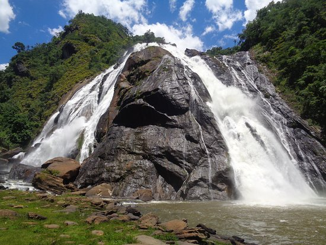
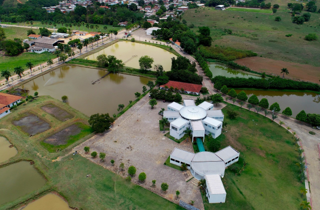

Cachoeira da Fumaça

Cachoeira da Fumaça (Rio Braço Norte): Queda d' água de 144 metros de altura ideal para contemplação, fotografias e "banho de neblina"
(provocado pelas gotículas de água em suspensão). Poços para banho são raros devido a ocorrência de forte corredeira no rio.
A cachoeira está localizada
a poucos metros da sede administrativa e do estacionamento, facilmente alcançada em uma caminhada de no máximo 2 minutos.
Cachoeira da Fumaça
Igreja Matriz Nossa Senhora da Penha

A capela Mor de Alegre começou a ser construída em barro e madeira no ano de 1851, por iniciativa dos primeiros exploradores da região.
Oficialmente, as terras do patrimônio de Alegre ficaram sobre responsabilidade da igreja com a condição de que esta doaria as terras à Nossa Senhora da Penha.
Em 1868 o corpo da igreja foi edificado e a Capela Mor reparada. Novas ampliações foram realizadas entre 1914 e 1916 e também entre 1953 e 1968.
Todas essas reformas resultaram num estilo barroco-gótico.
A igreja de Nossa Senhora da Penha possui ainda magníficos vitrais retratando a vida de cristo e pinturas do Indiano Diwali.
Igreja Matriz Nossa Senhora da Penha
IFES

Desde a criação da Escola de Aprendizes Artífices do Espírito Santo, em 1909, até a transformação em Instituto Federal do Espírito Santo,
a instituição é referência em educação na sociedade capixaba.
Resultado da união das unidades do Centro Federal de Educação Tecnológica e das Escolas Agrotécnicas Federais, em 2008,
o Ifes promove educação profissional pública de excelência, integrando ensino, pesquisa e extensão, para a construção de uma sociedade democrática, justa e sustentável.
O Instituto Federal do Espírito Santo oferece de cursos técnicos ao doutorado e possui mais de 36 mil alunos.
São 100 cursos técnicos, 63 cursos de graduação, 30 cursos de pós-graduação em nível de especialização e aperfeiçoamento, 11 mestrados e 1 doutorado profissional.
Com 22 campi em funcionamento, incluindo o Centro de Referência em Formação e em Educação a Distância - Cefor, o Ifes se faz presente em todas as microrregiões capixabas.
O Instituto possui ainda 49 polos de educação a distância no Espírito Santo, o Polo de Inovação e a Cidade da Inovação.
IFES campus de Alegre